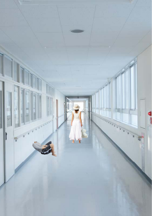
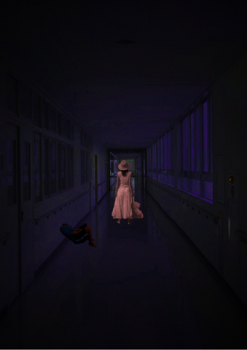

映画ポスター「カラダ探し」
| コンセプト | 終わらない恐怖の中で生きる |
|---|---|
| ターゲット | ホラー映画に興味のある方 |
| ツール |  |
カラダ探しの映画ポスターを作りました。 カラダ探しの特徴である「今日を繰り返す」を、「もう、明日は来ない」というキャッチコピーを使って、知らない人にも興味を持ってもらえるようにしました。
| コンセプト | 終わらない恐怖の中で生きる |
|---|---|
| ターゲット | ホラー映画に興味のある方 |
| ツール | |
カラダ探しの映画ポスターを作りました。 カラダ探しの特徴である「今日を繰り返す」を、「もう、明日は来ない」というキャッチコピーを使って、知らない人にも興味を持ってもらえるようにしました。
暗い作品を作らなかったので挑戦をして暗めのポスターを作りました。 私は、カラダ探しがとても好きなのでその好きが伝わるような気持ちで作りました。 元の写真はとても明るくこれがホラー作品の素材として使えるのかなと不安でしたが、彩度を下げたり、赤色にしたり、一つ一つ工夫をして作りました。
加工前
加工後
